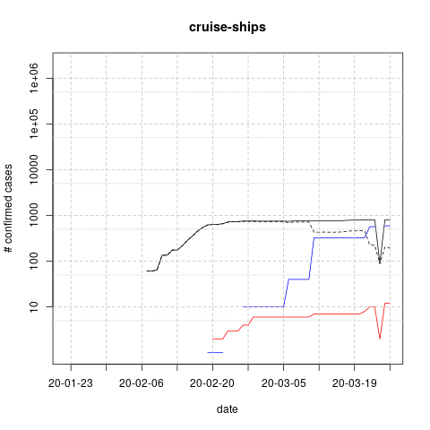
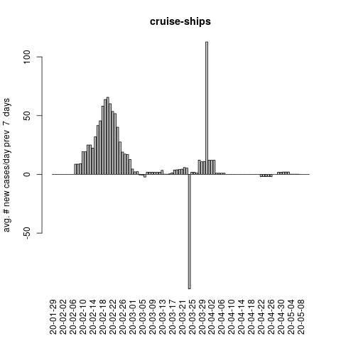

Plots of covid-19 case count data
The nextstrain collaborative effort has a nice FAQ if you want general information about the COVID-19 coronavirus: https://nextstrain.org/help/coronavirus/FAQ
Researchers at the Johns Hopkins University Center for Systems Science and Engineering have developed a nice dashboard for viewing the case counts of covid-19 on a map. Not only do they go through the very laborious task of compiling the counts daily, but they are kind enough to share that data in easy-to-parse CSV files in a GitHub repository. Note their Terms of Use "This GitHub repo and its contents herein, including all data, mapping, and analysis, copyright 2020 Johns Hopkins University, all rights reserved, is provided to the public strictly for educational and academic research purposes. The Website relies upon publicly available data from multiple sources, that do not always agree. The Johns Hopkins University hereby disclaims any and all representations and warranties with respect to the Website, including accuracy, fitness for use, and merchantability. Reliance on the Website for medical guidance or use of the Website in commerce is strictly prohibited."
I found myself graphing the counts of cases by country on a log scale, frequently. So I decided to generate those plots via scripts. My code for doing that is at https://github.com/mtholder/sars-cov-2, but it doesn't do a whole lot more than group their data by country and regions. All of the hard work need to generate these graphs is being done by the the Johns Hopkins CSSE folks; the thousands of health care workers who are collecting the data; and large number of public health workers who are making the data available. Some notes:
- Variation in the time of day that data is gathered makes the plots of new cases for a day very noisy, even at large geographic scales. So, the new cases plots are the average number of new cases for the 3 days prior to the date shown on the x-axis.
- The regions I used for aggregating the countries are fairly arbitrary. They reflect a mixture of geographic proximity and pragmatic considerations about what countries seem to be affected in similar ways by the disease in early March, 2020 If you want to look at the python dictionaries I'm using to group countries into, see: transpose_and_sum_by_country.py#L6-L62
- Within each region, countries are listed alphabetically
- Countries with fewer than 5 cases are not plotted
- The data are currently being read from the 'csse_covid_19_data/csse_covid_19_daily_reports' directory of the JHU git repo, because the data in the csse_covid_19_data/csse_covid_19_time_series underwent some change wrt how reporting was done within countries. See their FAQ and issue-382.
- The raw data do show some drops in the cumulative case counts in several countries. This would be impossible if
the data were completely accurate. These errors creep in because the JHU researchers aggregating several different
sources (as they note in their Terms of Use statement). My scripts do not attempt to correct these issues. They do
attempt to correct cases of the same locality having multiple names
(see the
aliasesvariable in transpose_and_sum_by_country.py) and some localities having duplicate entries in the daily reports (see theknown_dupvariable in my transpose_and_sum_by_country.py). - The Johns Hopkins U. data is updated about once a day (usually in the late afternoon/evening in USA). See https://www.worldometers.info/coronavirus/ if you are looking for data that is updated more frequently.
- The March 23 spreadsheet for the US showed no recovered cases. This is probably an artifact of moving to finer-grained locality reporting. But it is certainly an error (this also affects the summed counts of recovered cases in North America and the world
| Country/region | cases in black solid active in black dashed recovered in blue deaths in red | Average # of new case for the prior 3 days |
|---|---|---|
world cases: 378,287 deaths: 16,497 recovered: 100,958 active 260,832 |  |  |
east asia cases: 91,790 deaths: 3,429 recovered: 76,248 active 12,113 |  |  |
mainland china cases: 81,116 deaths: 3,270 recovered: 72,709 active 5,137 |  |  |
east asia without china cases: 10,674 deaths: 159 recovered: 3,539 active 6,976 |  |  |
hong kong cases: 356 deaths: 4 recovered: 100 active 252 |  |  |
japan cases: 1,128 deaths: 42 recovered: 235 active 851 |  |  |
macau cases: 24 deaths: 0 recovered: 10 active 14 |  |  |
mongolia cases: 10 deaths: 0 recovered: 0 active 10 |  |  |
taiwan cases: 195 deaths: 2 recovered: 28 active 165 |  |  |
south korea cases: 8,961 deaths: 111 recovered: 3,166 active 5,684 |  |  |
europe cases: 195,138 deaths: 10,335 recovered: 14,466 active 170,337 |  |  |
albania cases: 104 deaths: 4 recovered: 2 active 98 |  |  |
andorra cases: 133 deaths: 1 recovered: 1 active 131 |  |  |
austria cases: 4,474 deaths: 21 recovered: 9 active 4,444 |  |  |
belarus cases: 81 deaths: 0 recovered: 22 active 59 |  |  |
belgium cases: 3,743 deaths: 88 recovered: 401 active 3,254 |  |  |
bosnia and herzegovina cases: 132 deaths: 1 recovered: 2 active 129 |  |  |
bulgaria cases: 201 deaths: 3 recovered: 3 active 195 |  |  |
croatia cases: 315 deaths: 1 recovered: 5 active 309 |  |  |
cyprus cases: 116 deaths: 1 recovered: 3 active 112 |  |  |
czech republic cases: 1,236 deaths: 1 recovered: 7 active 1,228 |  |  |
denmark cases: 1,572 deaths: 24 recovered: 24 active 1,524 |  |  |
estonia cases: 352 deaths: 0 recovered: 4 active 348 |  |  |
finland cases: 700 deaths: 1 recovered: 10 active 689 |  |  |
france cases: 20,123 deaths: 862 recovered: 2,207 active 17,054 |  |  |
germany cases: 29,056 deaths: 123 recovered: 453 active 28,480 |  |  |
greece cases: 695 deaths: 17 recovered: 29 active 649 |  |  |
hungary cases: 167 deaths: 7 recovered: 16 active 144 |  |  |
iceland cases: 588 deaths: 1 recovered: 51 active 536 |  |  |
ireland cases: 1,125 deaths: 6 recovered: 5 active 1,114 |  |  |
italy cases: 63,927 deaths: 6,077 recovered: 7,432 active 50,418 |  |  |
latvia cases: 180 deaths: 0 recovered: 1 active 179 |  |  |
liechtenstein cases: 51 deaths: 0 recovered: 0 active 51 |  |  |
lithuania cases: 179 deaths: 1 recovered: 1 active 177 |  |  |
luxembourg cases: 875 deaths: 8 recovered: 6 active 861 |  |  |
malta cases: 107 deaths: 0 recovered: 2 active 105 |  |  |
moldova cases: 109 deaths: 1 recovered: 2 active 106 |  |  |
monaco cases: 23 deaths: 0 recovered: 1 active 22 |  |  |
montenegro cases: 27 deaths: 1 recovered: 0 active 26 |  |  |
netherlands cases: 4,764 deaths: 214 recovered: 3 active 4,547 |  |  |
north macedonia cases: 136 deaths: 2 recovered: 1 active 133 |  |  |
norway cases: 2,621 deaths: 10 recovered: 6 active 2,605 |  |  |
poland cases: 749 deaths: 8 recovered: 13 active 728 |  |  |
portugal cases: 2,060 deaths: 23 recovered: 14 active 2,023 |  |  |
romania cases: 576 deaths: 7 recovered: 73 active 496 |  |  |
san marino cases: 187 deaths: 20 recovered: 4 active 163 |  |  |
serbia cases: 249 deaths: 3 recovered: 3 active 243 |  |  |
slovakia cases: 186 deaths: 0 recovered: 7 active 179 |  |  |
slovenia cases: 442 deaths: 3 recovered: 0 active 439 |  |  |
spain cases: 35,136 deaths: 2,311 recovered: 3,355 active 29,470 |  |  |
sweden cases: 2,046 deaths: 25 recovered: 16 active 2,005 |  |  |
switzerland cases: 8,795 deaths: 120 recovered: 131 active 8,544 |  |  |
uk cases: 6,726 deaths: 336 recovered: 140 active 6,250 |  |  |
ukraine cases: 73 deaths: 3 recovered: 1 active 69 |  |  |
north am cases: 45,981 deaths: 578 recovered: 4 active 45,399 |  |  |
canada cases: 2,075 deaths: 24 recovered: 0 active 2,051 |  |  |
mexico cases: 316 deaths: 3 recovered: 4 active 309 |  |  |
us cases: 43,590 deaths: 551 recovered: 0 active 43,039 |  |  |
middle east cases: 28,574 deaths: 1,881 recovered: 8,792 active 17,901 |  |  |
bahrain cases: 377 deaths: 2 recovered: 164 active 211 |  |  |
iran cases: 23,049 deaths: 1,812 recovered: 8,376 active 12,861 |  |  |
iraq cases: 266 deaths: 23 recovered: 62 active 181 |  |  |
israel cases: 1,442 deaths: 1 recovered: 41 active 1,400 |  |  |
jordan cases: 127 deaths: 0 recovered: 1 active 126 |  |  |
kuwait cases: 189 deaths: 0 recovered: 30 active 159 |  |  |
lebanon cases: 267 deaths: 4 recovered: 8 active 255 |  |  |
oman cases: 66 deaths: 0 recovered: 17 active 49 |  |  |
qatar cases: 501 deaths: 0 recovered: 33 active 468 |  |  |
saudi arabia cases: 562 deaths: 0 recovered: 19 active 543 |  |  |
turkey cases: 1,529 deaths: 37 recovered: 0 active 1,492 |  |  |
united arab emirates cases: 198 deaths: 2 recovered: 41 active 155 |  |  |
se asia cases: 4,094 deaths: 99 recovered: 432 active 3,563 |  |  |
brunei cases: 91 deaths: 0 recovered: 2 active 89 |  |  |
cambodia cases: 87 deaths: 0 recovered: 2 active 85 |  |  |
indonesia cases: 579 deaths: 49 recovered: 30 active 500 |  |  |
malaysia cases: 1,518 deaths: 14 recovered: 159 active 1,345 |  |  |
philippines cases: 462 deaths: 33 recovered: 18 active 411 |  |  |
thailand cases: 721 deaths: 1 recovered: 52 active 668 |  |  |
vietnam cases: 123 deaths: 0 recovered: 17 active 106 |  |  |
singapore cases: 509 deaths: 2 recovered: 152 active 355 |  |  |
central asia cases: 2,491 deaths: 22 recovered: 98 active 2,371 |  |  |
afghanistan cases: 40 deaths: 1 recovered: 1 active 38 |  |  |
armenia cases: 235 deaths: 0 recovered: 2 active 233 |  |  |
azerbaijan cases: 72 deaths: 1 recovered: 10 active 61 |  |  |
bangladesh cases: 33 deaths: 3 recovered: 5 active 25 |  |  |
georgia cases: 61 deaths: 0 recovered: 8 active 53 |  |  |
india cases: 499 deaths: 10 recovered: 34 active 455 |  |  |
kazakhstan cases: 62 deaths: 0 recovered: 0 active 62 |  |  |
kyrgyzstan cases: 16 deaths: 0 recovered: 0 active 16 |  |  |
maldives cases: 13 deaths: 0 recovered: 5 active 8 |  |  |
pakistan cases: 875 deaths: 6 recovered: 13 active 856 |  |  |
sri lanka cases: 97 deaths: 0 recovered: 2 active 95 |  |  |
russia cases: 438 deaths: 1 recovered: 17 active 420 |  |  |
uzbekistan cases: 46 deaths: 0 recovered: 0 active 46 |  |  |
africa cases: 1,818 deaths: 57 recovered: 162 active 1,599 |  |  |
algeria cases: 230 deaths: 17 recovered: 65 active 148 |  |  |
benin cases: 5 deaths: 0 recovered: 0 active 5 |  |  |
burkina faso cases: 99 deaths: 4 recovered: 5 active 90 |  |  |
cameroon cases: 56 deaths: 0 recovered: 2 active 54 |  |  |
congo cases: 36 deaths: 1 recovered: 0 active 35 |  |  |
egypt cases: 366 deaths: 19 recovered: 68 active 279 |  |  |
equatorial guinea cases: 9 deaths: 0 recovered: 0 active 9 |  |  |
ethiopia cases: 11 deaths: 0 recovered: 0 active 11 |  |  |
gabon cases: 5 deaths: 1 recovered: 0 active 4 |  |  |
ghana cases: 27 deaths: 2 recovered: 0 active 25 |  |  |
ivory coast cases: 25 deaths: 0 recovered: 2 active 23 |  |  |
kenya cases: 16 deaths: 0 recovered: 0 active 16 |  |  |
madagascar cases: 12 deaths: 0 recovered: 0 active 12 |  |  |
mauritius cases: 36 deaths: 2 recovered: 0 active 34 |  |  |
morocco cases: 143 deaths: 4 recovered: 5 active 134 |  |  |
nigeria cases: 40 deaths: 1 recovered: 2 active 37 |  |  |
rwanda cases: 36 deaths: 0 recovered: 0 active 36 |  |  |
senegal cases: 79 deaths: 0 recovered: 8 active 71 |  |  |
seychelles cases: 7 deaths: 0 recovered: 0 active 7 |  |  |
south africa cases: 402 deaths: 0 recovered: 4 active 398 |  |  |
tanzania cases: 12 deaths: 0 recovered: 0 active 12 |  |  |
togo cases: 18 deaths: 0 recovered: 0 active 18 |  |  |
uganda cases: 9 deaths: 0 recovered: 0 active 9 |  |  |
tunisia cases: 89 deaths: 3 recovered: 1 active 85 |  |  |
south am cases: 4,898 deaths: 68 recovered: 62 active 4,768 |  |  |
argentina cases: 266 deaths: 4 recovered: 27 active 235 |  |  |
bolivia cases: 27 deaths: 0 recovered: 0 active 27 |  |  |
brazil cases: 1,924 deaths: 34 recovered: 2 active 1,888 |  |  |
chile cases: 746 deaths: 2 recovered: 11 active 733 |  |  |
colombia cases: 277 deaths: 3 recovered: 3 active 271 |  |  |
ecuador cases: 981 deaths: 18 recovered: 3 active 960 |  |  |
guyana cases: 20 deaths: 1 recovered: 0 active 19 |  |  |
paraguay cases: 22 deaths: 1 recovered: 0 active 21 |  |  |
peru cases: 395 deaths: 5 recovered: 1 active 389 |  |  |
suriname cases: 5 deaths: 0 recovered: 0 active 5 |  |  |
uruguay cases: 158 deaths: 0 recovered: 0 active 158 |  |  |
venezuela cases: 77 deaths: 0 recovered: 15 active 62 |  |  |
aust nz cases: 1,785 deaths: 7 recovered: 119 active 1,659 |  |  |
australia cases: 1,682 deaths: 7 recovered: 119 active 1,556 |  |  |
new zealand cases: 102 deaths: 0 recovered: 0 active 102 |  |  |
central am cases: 916 deaths: 11 recovered: 8 active 897 |  |  |
barbados cases: 17 deaths: 0 recovered: 0 active 17 |  |  |
costa rica cases: 158 deaths: 2 recovered: 2 active 154 |  |  |
cuba cases: 40 deaths: 1 recovered: 0 active 39 |  |  |
dominican republic cases: 245 deaths: 3 recovered: 3 active 239 |  |  |
guatemala cases: 20 deaths: 1 recovered: 0 active 19 |  |  |
haiti cases: 6 deaths: 0 recovered: 0 active 6 |  |  |
honduras cases: 27 deaths: 0 recovered: 0 active 27 |  |  |
jamaica cases: 19 deaths: 1 recovered: 2 active 16 |  |  |
panama cases: 313 deaths: 3 recovered: 1 active 309 |  |  |
trinidad and tobago cases: 51 deaths: 0 recovered: 0 active 51 |  |  |
cruise ships cases: 802 deaths: 10 recovered: 567 active 225 |  |  |
us cases: 43,590 deaths: 551 recovered: 0 active 43,039 | | |
us-loc-alabama cases: 196 deaths: 0 recovered: 0 active 196 |  |  |
us-loc-alaska cases: 30 deaths: 0 recovered: 0 active 30 |  |  |
us-loc-arizona cases: 235 deaths: 2 recovered: 0 active 233 |  |  |
us-loc-arkansas cases: 192 deaths: 0 recovered: 0 active 192 |  |  |
us-loc-california cases: 2,108 deaths: 39 recovered: 0 active 2,069 |  |  |
us-loc-colorado cases: 704 deaths: 7 recovered: 0 active 697 |  |  |
us-loc-connecticut cases: 415 deaths: 10 recovered: 0 active 405 |  |  |
us-loc-dc cases: 120 deaths: 2 recovered: 0 active 118 |  |  |
us-loc-delaware cases: 68 deaths: 0 recovered: 0 active 68 |  |  |
us-loc-florida cases: 1,227 deaths: 18 recovered: 0 active 1,209 |  |  |
us-loc-georgia cases: 772 deaths: 25 recovered: 0 active 747 |  |  |
us-loc-guam cases: 29 deaths: 1 recovered: 0 active 28 |  |  |
us-loc-hawaii cases: 56 deaths: 0 recovered: 0 active 56 |  |  |
us-loc-idaho cases: 68 deaths: 0 recovered: 0 active 68 |  |  |
us-loc-illinois cases: 1,285 deaths: 12 recovered: 0 active 1,273 |  |  |
us-loc-indiana cases: 270 deaths: 7 recovered: 0 active 263 |  |  |
us-loc-iowa cases: 105 deaths: 0 recovered: 0 active 105 |  |  |
us-loc-kansas cases: 84 deaths: 2 recovered: 0 active 82 |  |  |
us-loc-kentucky cases: 123 deaths: 4 recovered: 0 active 119 |  |  |
us-loc-louisiana cases: 1,172 deaths: 35 recovered: 0 active 1,137 |  |  |
us-loc-maine cases: 107 deaths: 0 recovered: 0 active 107 |  |  |
us-loc-maryland cases: 290 deaths: 3 recovered: 0 active 287 |  |  |
us-loc-massachusetts cases: 777 deaths: 9 recovered: 0 active 768 |  |  |
us-loc-michigan cases: 1,329 deaths: 15 recovered: 0 active 1,314 |  |  |
us-loc-minnesota cases: 234 deaths: 1 recovered: 0 active 233 |  |  |
us-loc-mississippi cases: 249 deaths: 1 recovered: 0 active 248 |  |  |
us-loc-missouri cases: 187 deaths: 4 recovered: 0 active 183 |  |  |
us-loc-montana cases: 34 deaths: 0 recovered: 0 active 34 |  |  |
us-loc-nebraska cases: 51 deaths: 0 recovered: 0 active 51 |  |  |
us-loc-nevada cases: 245 deaths: 4 recovered: 0 active 241 |  |  |
us-loc-new hampshire cases: 101 deaths: 1 recovered: 0 active 100 |  |  |
us-loc-new jersey cases: 2,844 deaths: 27 recovered: 0 active 2,817 |  |  |
us-loc-new mexico cases: 83 deaths: 0 recovered: 0 active 83 |  |  |
us-loc-new york cases: 20,884 deaths: 158 recovered: 0 active 20,726 |  |  |
us-loc-north carolina cases: 353 deaths: 0 recovered: 0 active 353 |  |  |
us-loc-north dakota cases: 30 deaths: 0 recovered: 0 active 30 |  |  |
us-loc-ohio cases: 443 deaths: 6 recovered: 0 active 437 |  |  |
us-loc-oklahoma cases: 81 deaths: 2 recovered: 0 active 79 |  |  |
us-loc-oregon cases: 191 deaths: 5 recovered: 0 active 186 |  |  |
us-loc-pennsylvania cases: 698 deaths: 6 recovered: 0 active 692 |  |  |
us-loc-puerto rico cases: 31 deaths: 2 recovered: 0 active 29 |  |  |
us-loc-rhode island cases: 106 deaths: 0 recovered: 0 active 106 |  |  |
us-loc-south carolina cases: 298 deaths: 5 recovered: 0 active 293 |  |  |
us-loc-south dakota cases: 28 deaths: 1 recovered: 0 active 27 |  |  |
us-loc-tennessee cases: 614 deaths: 2 recovered: 0 active 612 |  |  |
us-loc-texas cases: 758 deaths: 9 recovered: 0 active 749 |  |  |
us-loc-utah cases: 257 deaths: 1 recovered: 0 active 256 |  |  |
us-loc-vermont cases: 75 deaths: 5 recovered: 0 active 70 |  |  |
us-loc-virgin islands cases: 7 deaths: 0 recovered: 0 active 7 |  |  |
us-loc-virginia cases: 254 deaths: 6 recovered: 0 active 248 |  |  |
us-loc-washington cases: 2,221 deaths: 109 recovered: 0 active 2,112 |  |  |
us-loc-west virginia cases: 16 deaths: 0 recovered: 0 active 16 |  |  |
us-loc-wisconsin cases: 425 deaths: 5 recovered: 0 active 420 |  |  |
us-loc-wyoming cases: 26 deaths: 0 recovered: 0 active 26 |  |  |